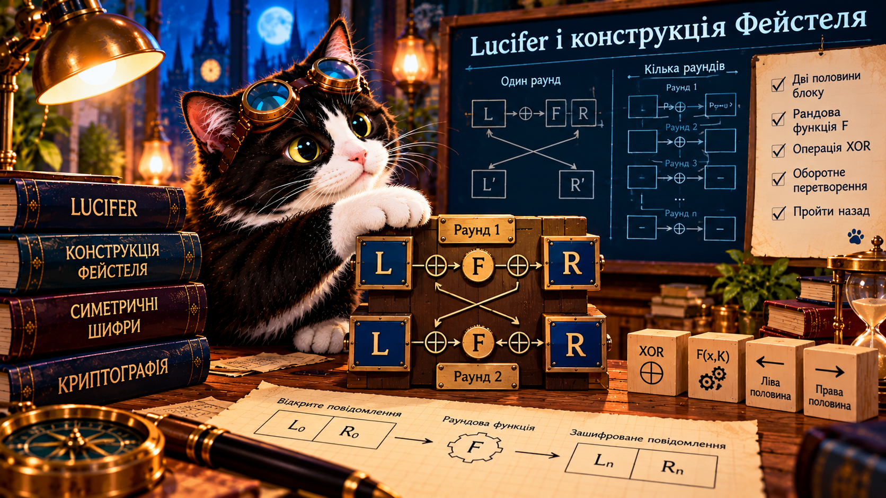

01 · Розділи блок
Знайдіть ліву та праву половини 8-бітного блока.
ВідкритиЯк побудувати оборотне перетворення з кількох дій?
🐈⬛ Буч знайшов механізм із двома половинами, раундовими ключами та XOR. Чи вдасться пройти шифрування назад, навіть якщо раундову функцію не можна обернути?

Lucifer — назва ранніх блочних шифрів IBM, які вплинули на розвиток DES. Конструкція Фейстеля — загальний спосіб побудови оборотних раундових перетворень. Це не одна конкретна програма.
Блок даних ділимо на дві половини: L (ліву) і R (праву). Для кожного раунду є ключ K і функція F. Важлива властивість: функція F сама по собі не зобов'язана бути оборотною.
Щоб пройти назад:
У навчальній моделі беремо F(R,K)=R⊕K. Це дуже проста функція для пояснення механізму, а не захищений шифр.
Введіть по 4 біти для L₀, R₀ та двох ключів. Після шифрування запустіть зворотний хід.
На кожному кроці нова ліва половина точно дорівнює попередній правій. Отже, попередню праву половину вже знаємо; за допомогою XOR і тієї самої F відновлюємо попередню ліву. Для розшифрування раунди проходять у зворотному порядку.
Оборотність ≠ безпечність. Наша модель із двома раундами і простою F демонструє принцип, але не придатна для захисту реальних даних.
Візьміть власний 8-бітний блок, два або три 4-бітні раундові ключі та навчальну функцію F. Побудуйте таблицю станів L і R. Пройдіть усі раунди вперед і назад, перевірте збіг із початковим блоком. Поясніть, що саме ви довели, а чого — ні.
Пройти веббот і отримати PDF-паспорт →